遊覽完釜山大渚生態公園, 從「F」區和「C」區間的出口離開, 步行一會便抵達輕軌大渚站, 登上無人駕駛列車, 不一會便返回沙上區 掛法 Renecite 站, 我們會在附近午餐, 然後往離車站不遠的三樂江邊公園 (Samnak Riverside Park) 散步, 也是今天釜山最後的行程。
走出輕軌掛法 Renecite 站, 迎面是 Home plus 百貨公司, 一般來說, 這些百貨大樓都設有美食街 (Food Court), 而且價錢都比較廉宜, 便立即走去看看。
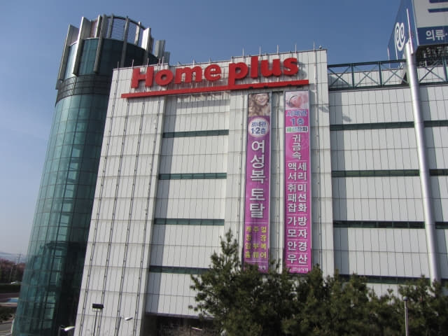
走到 Home plus 大樓, 看看入口前的樓層介紹, 果然有美食街, 就在 6F。
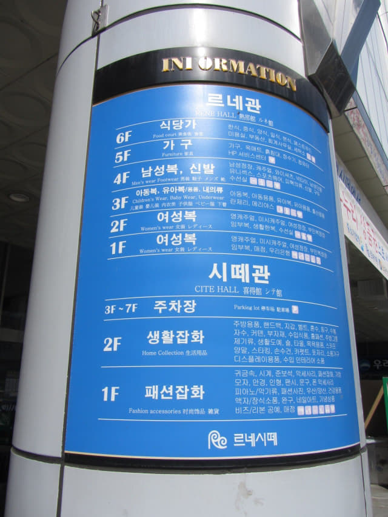
進入大樓, 穿過一樓的服裝區, 店舖擺設十分古老, 好像返回幾十年前的街市。
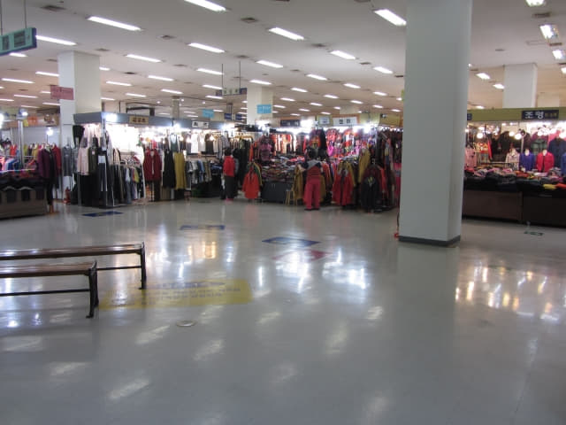
沙上區 Home plus 6F 美食街 (Food Court)
穿過一樓服裝區, 來到電梯大堂, 接著乘電梯往 6F 美食街。6F 整個樓層都是食店, 供應各式各樣的食物, 價錢果然經濟實惠! 哈哈~~~ 結果我們在釜山的三餐都是在這裡「攪掂」!
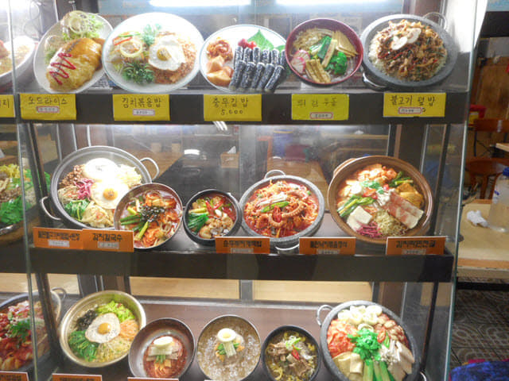
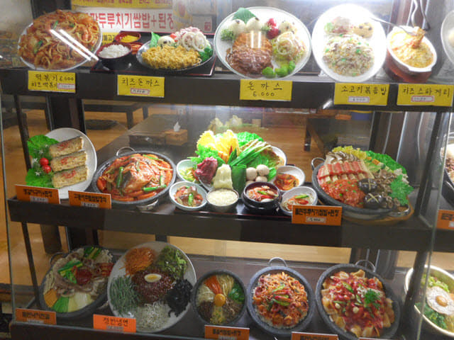
在美食街打了兩個圈, 真是花多眼亂, 很難取捨, 最後決定在離電梯大堂不遠的一間面積比較大的食店吃午餐。
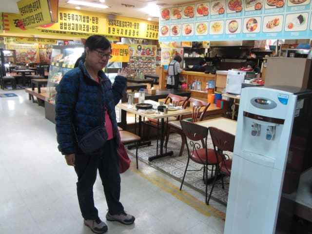
她叫了一客石頭燒肉 (불고기)飯定食,其實是牛肉來的, 每客是 7,000 韓元。
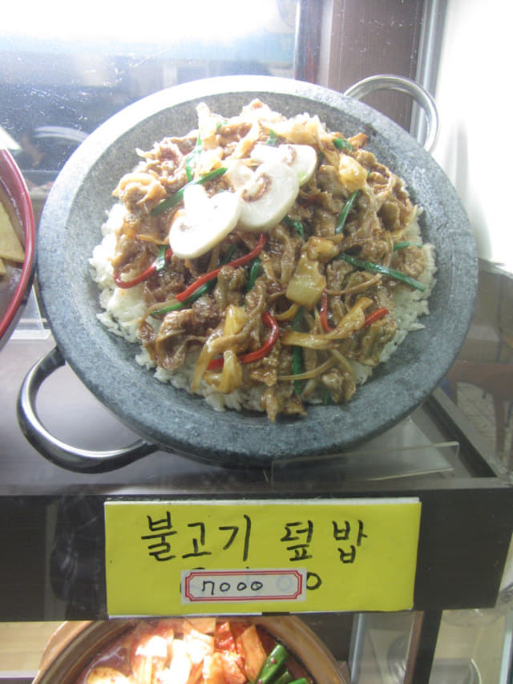
我叫了一客牙帶魚定食, 每客是 8,000 韓元。
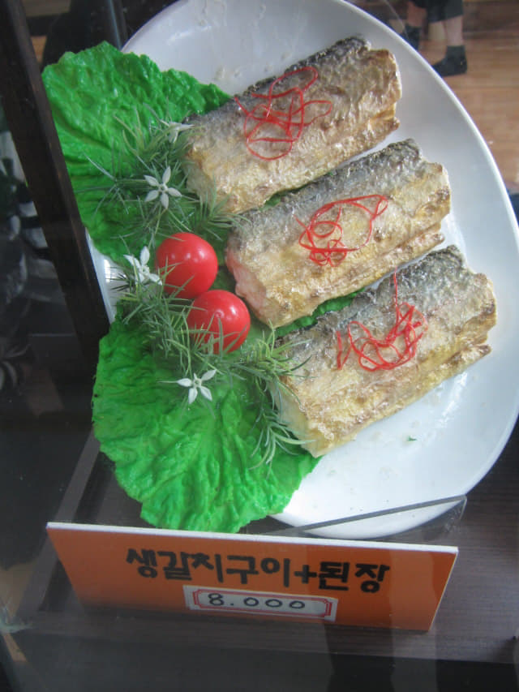
等了一會, 先送來石頭燒肉飯, 熱烘烘的, 香味十足, 十分吸引。
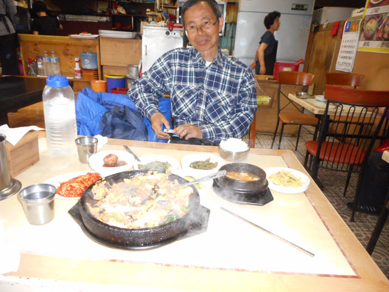
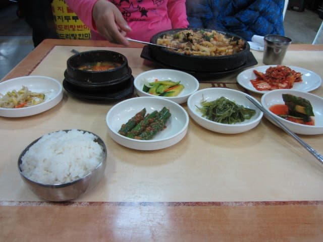
接著, 我的牙帶魚也送來了。
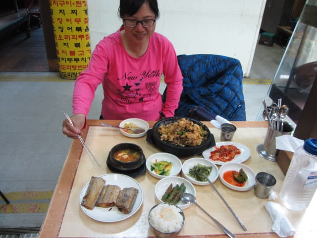
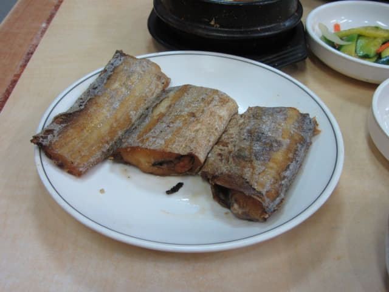
石頭燒肉飯很惹味, 牙帶魚味道比較淡, 但整體來說, 十分滿意, 十分滿足。